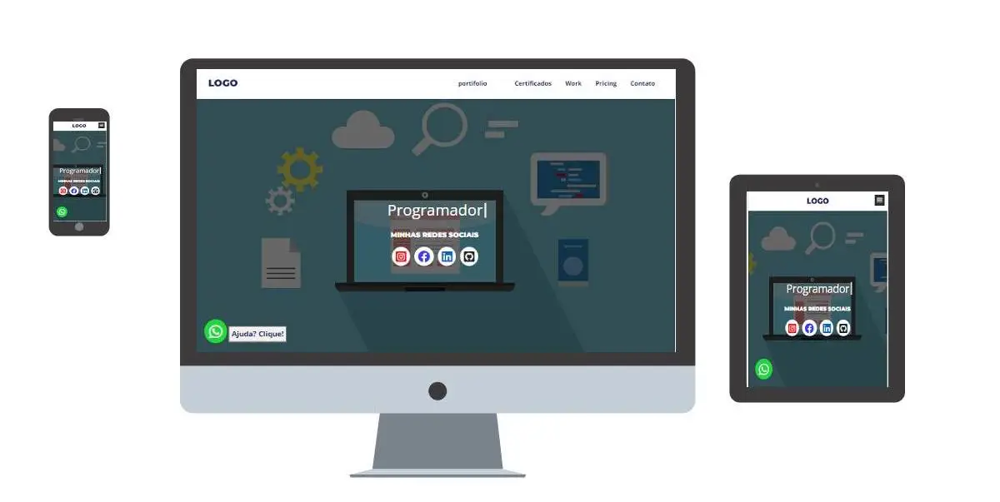
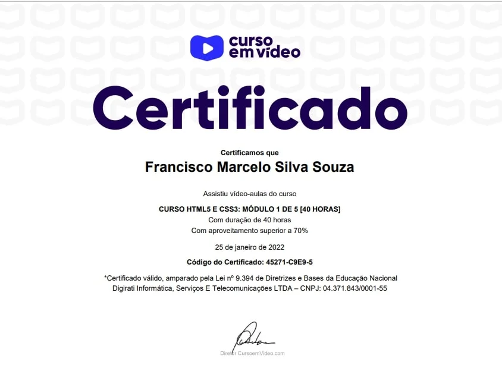

Seu produto ou serviço online

Por que um site?
Pelo menos 3 motivos
Motivo
A internet está trasformando nossas relações, cada vez mais presente no nosso cotidiano, diminuindo distâncias, quantas vazes já não se sentimos mais perto de alguém dando um "oi", "Bom dia!" ou algo parecido, usando a internet? cenário que demonstra uma tendência que já é indispensável uma presença online, em outras palavras seu produto ou serviço precisa de um site, para seu público-alvo acessa-lo. há uma vantagem bastante notável em ter um site, o quão caro e cansativo seria estar disponível em todo canto a todo tempo, sem um site ou algo parecido é bastante dificíl, senão impossível, não?.
Motivo
Segundo dados do Centro Regional de Estudos para o Desenvolvimento da Sociedade da Informação (Cetic.br), entre 2019 e 2021 houve um aumento de 11% no acesso a internet, em um pais com mais de 200 milhões de habitantes como o brasil, considerando margens de erro, uns 20, 30 milhões de novos internautas, um aumento consideravél desse público atingindo pouco mais de 80% do país. Há um intresse público e economico para integrar plenamente o país a internet, já dar para sentir um cheiro de oprtunidade para seu negócio.
Motivo
Um dado mais concreto da importância da internet para seu negócio, é fornecido pelo, já citado, Cetic, as pessoas que fazem compras online, era 39% da amostra em 2019 e em 2021 já era 46%, praticamente 50% do seu publico-alvo estar online e com tendência de crescimento.
Esses números já mostram o quanto é nescessário ter uma estrategia de promoção online, talvez um site, do que você tem a oferecer ao mundo, sem bobear e deixar seu público expostos a investidas do seu concorrente.

Certificados

+3


X
<
>